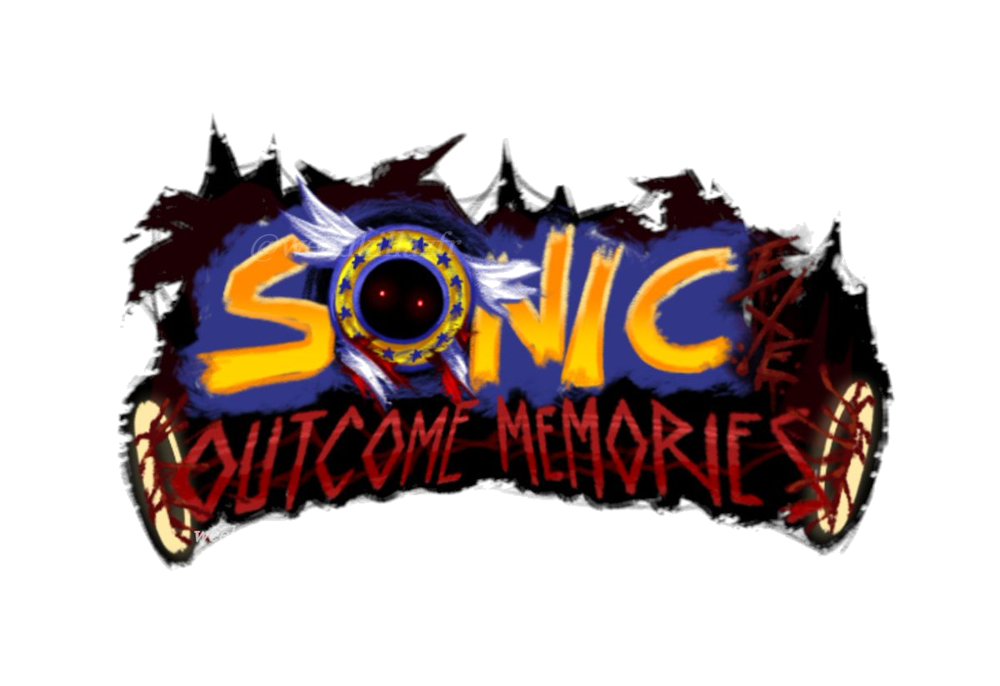
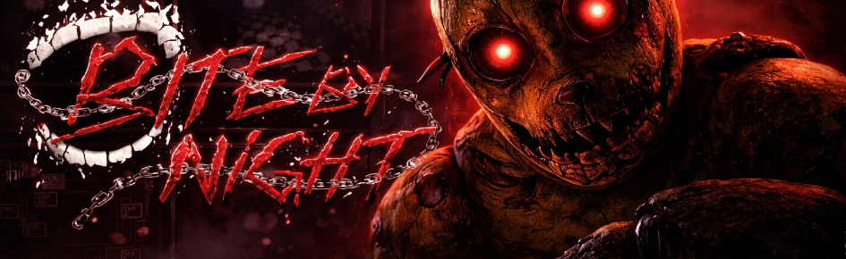
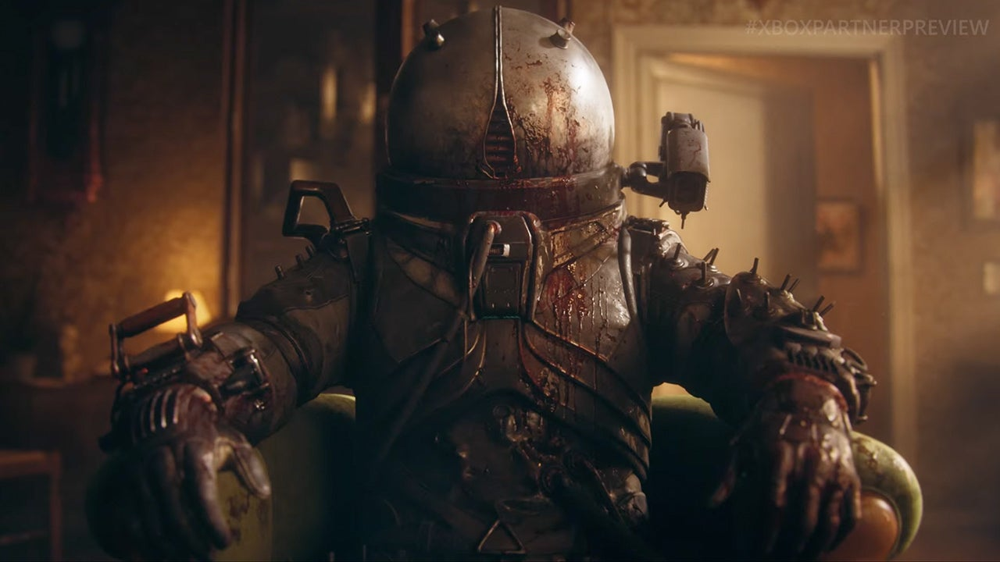
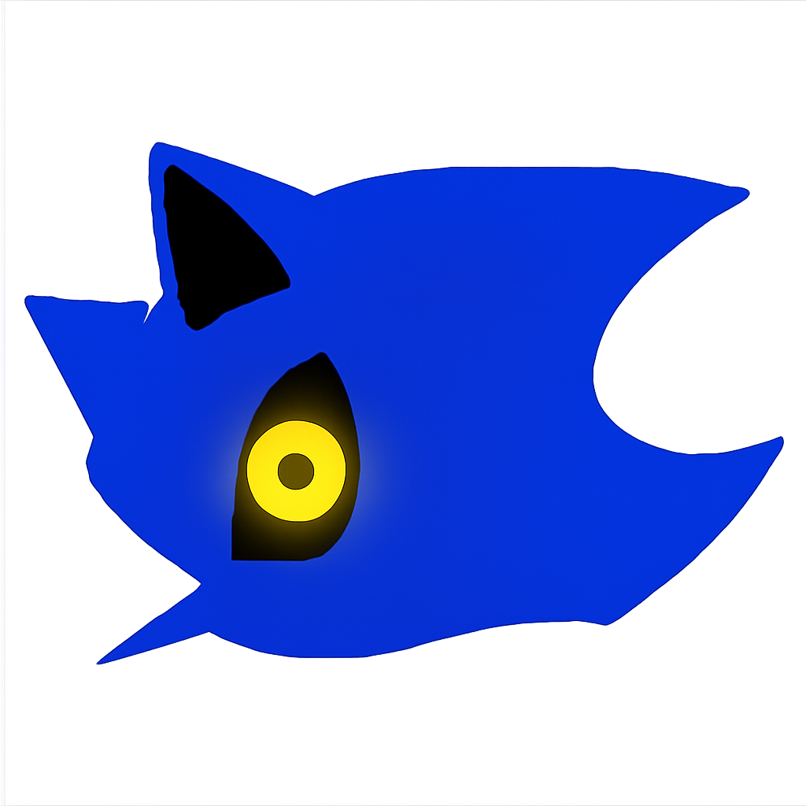
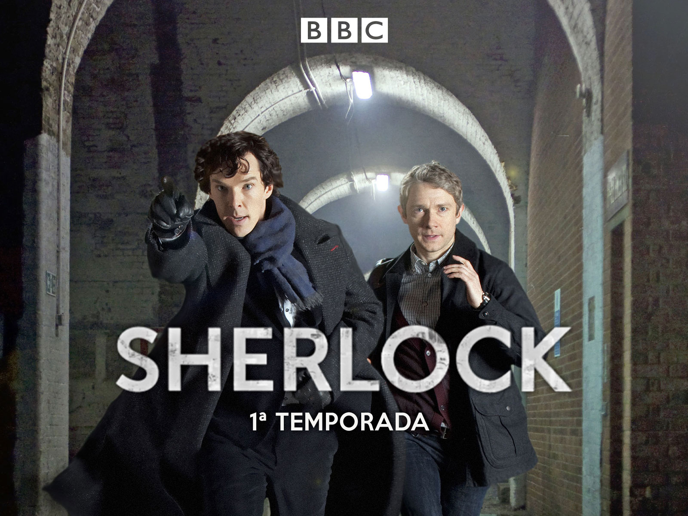
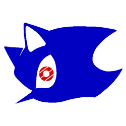
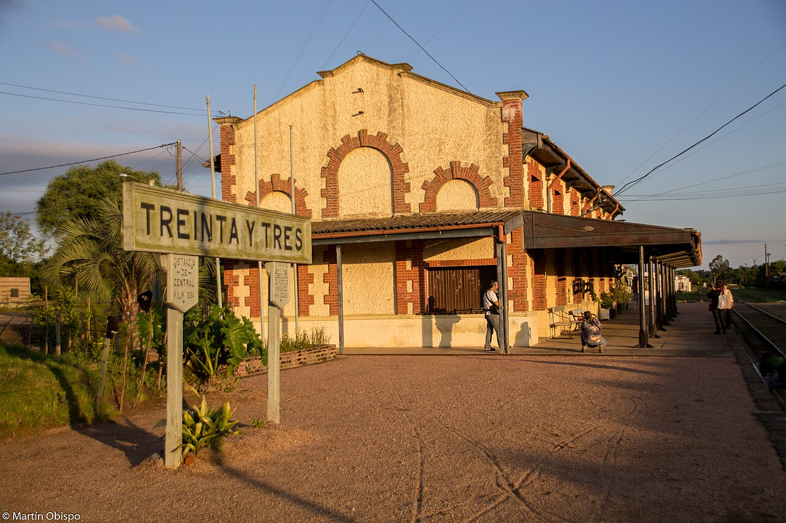

Mis vacaciones
En esta página vas a encontrar un recorrido por todo lo que hice en las vacaciones:
lugares, experiencias y quizá algún que otro imprevisto (espérate algo muy corto porque no hice casi nada). Es lo que pasó en mis vacaciones.

Games
Durante los primeros 5 días, desde el viernes hasta el miércoles, lo único que hice fue estar jugando en la PS5, como un zombie. Específicamente jugando: 2 juegos asimétricos BR cooperativos y 1 survival horror. Parece poco, pero llegué a jugar 5 horas seguidas antes de aburrirme y hacer cualquier otra cosa.
Los juegos que jugué fueron:

Outcome Memories
Un juego de Roblox cancelado, con bugs y otros temas, pero que es sorprendentemente adictivo. Lo jugué por aburrimiento y me terminé quedando mucho tiempo jugándolo.
Aunque fue cancelado, la creación de este juego asimétrico con temática de 1 vs 6 inspiró la creación de muchos otros proyectos del mismo estilo. Estaba divertido, y yo soy alguien que nunca había jugado Roblox y solo entré para jugar ese juego. Y aunque haya un poco de juego en los bugs, es entretenido y la música está buena... aunque también se buguea.

Bite by night
Este juego salió en lunes de turismo, y... me sorprendió que fuera tan bueno para estar en Roblox. Es muy parecido a Outcome, solo que es muy parecido a Dead by Daylight... muy... similar.
Sus animaciones son brutales y sus diseños están muy bien. Me enganché solo para conseguir al killer más caro de todos, valió la pena. Sigue en beta, pero tiene potencial, y sí tiene bugs, pero por suerte no encontré ninguno.

Cronos: The new dawn
Ahora sí nos ponemos serios. Este juego es una maravilla, y no, no es la primera vez que lo juego, en realidad es la tercera. Estoy completándolo al 100% y solo debo completarlo otra vez en dificultad máxima.
No es tan difícil, pero... me sigo mareando mucho. Por alguna razón genera mareos, lo que no tiene sentido, pues la jugabilidad es muy lenta, y aun así marea. Aparte de eso, excelente juego. Ya lo recomendé en la lista del ejercicio 2, y ahora lo vuelvo a hacer.
Puntuación: “Ese es nuestro deber”/10.

Peliculas
La mayor parte del tiempo estuve en la PS5, pero en el poco tiempo que no la usé, me puse a ver películas, y fue solo eso:
una que otra película y una serie del año en que los teléfonos tenían teclado.
Mercy
Un tremendo peliculón de la época actual, que cuenta cómo en Los Ángeles (porque según Hollywood solo existe Estados Unidos). Volviendo con la sinopsis: la película cuenta cómo el crimen se disparó, están saturados y la división de clases es aún peor que durante la burguesía.
El protagonista es un hombre que debe convencer a una IA juez de que no fue el asesino de su esposa, siendo él mismo quien ayudó a crear a la IA. Una joyita del cine que no recibió la atención que se merecía.

Sherlock
No, no es la película de Robert Downey Jr., es la serie inglesa que pasaban por la BBC cuando los teléfonos aún tenían teclado. A pesar de los años, sigue siendo buena, aunque más que capítulos, son como películas, pues duran más de una hora.
Interpretado por Benedict Cumberbatch (apuesto a que ni te suena, el actor de Doctor Strange), este Sherlock Holmes es bastante divertido y literalmente puede saber dónde estuviste el día de la semana pasada con mirarte, sí, lo exageran un poco.
Aquí el doctor John Watson es Martin Freeman (el de Black Panther y… ¿El Hobbit?). Si no lo busco, no me entero. Aquí es un loquito que no puede vivir sin sentirse en guerra, literalmente.
Mi puntuación: 9,5/10. Envejeció muy bien.

Salida
La única salida de todas, literalmente fue la única vez que salí en la semana de turismo.

Salida
Fui a buscar las flores con las que se hace ese té. Sorpresa al llegar al lugar: a 40 minutos de distancia, nos dijeron que debimos haber ido temprano. En ese momento pensé que podría volver a jugar a la PS5, pero no.
Durante lo que estoy seguro fueron mínimo unas 4 horas, estuvimos en un “museo”. Lo digo así porque en teoría era una vía de tren, pero no había ni un solo tren. No había nada, absolutamente nada para ver.
Lo que hicimos fue merendar en el café, que encima un croissant tenía moho, y en lugar de irnos luego de comer, nos quedamos... otras dos horas sin hacer nada.
Esto más parece una queja, y sí, lo es. Lo único bueno... el brownie estaba rico.
2/10.